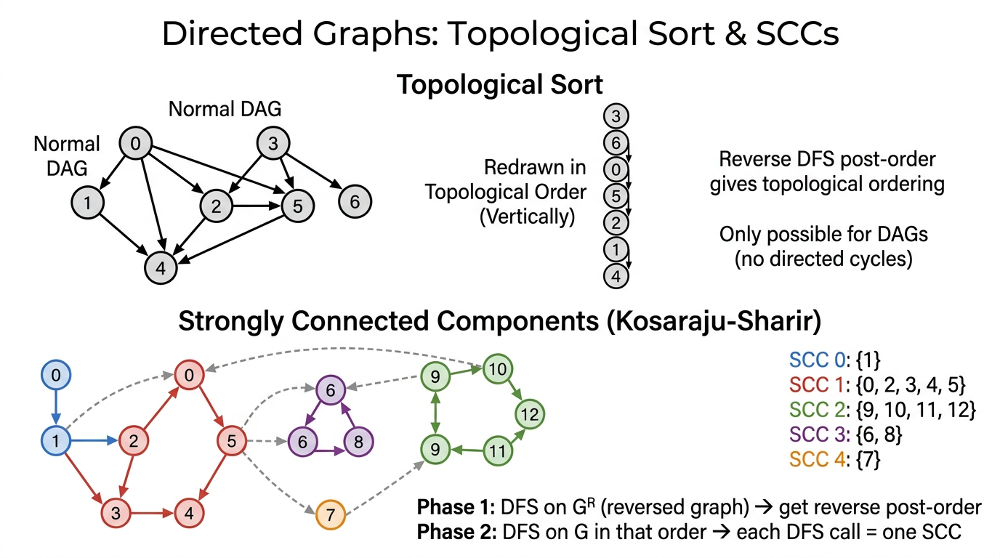

Directed Graphs (Digraphs) — COMP0005 Algorithms¶
Lecture-style notes. A directed graph (digraph) is the natural model when relationships are asymmetric: “A points to B” is not the same as “B points to A.” The same DFS/BFS skeletons as for undirected graphs still apply, but reachability, shortest paths, and connectivity all respect edge direction. Topological sort and strongly connected components are the two flagship digraph problems.
1. COMPLETE TOPIC SUMMARIES¶
Digraph definitions and terminology¶
Digraph. A digraph \(G = (V, E)\) consists of:
- a set of vertices (nodes) \(V\) with \(|V| = V\) (notation overload: \(V\) as set and \(V\) as count — your lecturer/textbook will fix one convention), and
- a set of directed edges \(E \subseteq V \times V\).
Each edge is an ordered pair \((v, w)\), read “\(v\) to \(w\)” or \(v \to w\). Unlike an undirected edge \(\{v,w\}\), \((v,w)\) and \((w,v)\) are different edges unless both are present.
Directed path. A sequence of vertices \(v_0, v_1, \ldots, v_k\) such that \((v_{i-1}, v_i) \in E\) for each \(i = 1,\ldots,k\). The length is \(k\) (number of edges).
Directed cycle. A directed path with \(k \geq 1\) where \(v_0 = v_k\) (a closed walk that follows edge directions). A self-loop \((v,v)\) is a directed cycle of length \(1\).
In-degree and out-degree (for vertex \(v\)):
- \(\mathrm{outdeg}(v)\) = number of edges \(v \to \cdot\) (edges leaving \(v\)).
- \(\mathrm{indeg}(v)\) = number of edges \(\cdot \to v\) (edges entering \(v\)).
Handshaking for digraphs.
[
\sum_{v \in V} \mathrm{indeg}(v) = \sum_{v \in V} \mathrm{outdeg}(v) = |E|.
]
Applications (direction matters):
| Domain | Vertices | Directed edge \(v \to w\) |
|---|---|---|
| Road networks | intersections | one-way street from \(v\) to \(w\) |
| Web | pages | hyperlink from \(v\) to \(w\) |
| Social “follow” | users | \(v\) follows \(w\) |
| Software / OOP | classes / modules | \(v\) inherits or imports \(w\) |
| Scholarly graphs | papers | \(v\) cites \(w\) |
Digraph API and adjacency lists¶
Core operations (typical textbook API):
addEdge(v, w)— add only \(v \to w\) (not \(w \to v\) unless you add it separately).adj(v)— iterable of vertices \(w\) such that \(v \to w\) exists (vertices that \(v\) points to — out-neighbours).
Adjacency-list representation. For each \(v\), store a list (or bag) of out-neighbours in adj[v]. If \(v \to w\) exists, \(w\) appears in adj[v]. You do not automatically add \(v\) to adj[w] (that would be the undirected convention).
Complexity (standard counting):
| Operation | Cost (typical adjacency list) |
|---|---|
| Space | \(\Theta(V + E)\) (array of \(V\) lists + \(E\) list entries) |
addEdge(v,w) |
\(O(1)\) amortised if lists append in constant time |
Iterate adj(v) |
\(\Theta(\mathrm{outdeg}(v))\) |
Beginner trap. Treating adj(v) as “neighbours in an undirected sense” breaks algorithms: reachability from \(s\) follows out-edges only.
DFS on digraphs¶
Algorithm. The same recursive (or explicit-stack) DFS as on undirected graphs: mark \(v\), then for each \(w \in \texttt{adj}(v)\), if \(w\) not marked, dfs(w).
What it computes. From a source \(s\), DFS marks exactly the vertices reachable from \(s\) along directed paths (not necessarily reachable to \(s\)).
Applications:
- Dead-code elimination: functions/modules as vertices; call edges \(v \to w\) if \(v\) may invoke \(w\); DFS from entry marks live code.
- Garbage collection (mark-and-sweep): objects as vertices; references \(v \to w\); mark phase = DFS from roots.
- Web crawling: pages and links; crawl follows out-links.
Edge classification (optional but useful). During DFS from \(s\), for an edge \(v \to w\):
- Tree edge — first discovery \(v \to w\).
- Forward / back / cross edges appear depending on whether \(w\) was already known and stack structure; exams often focus on back edges ⇔ cycle in DFS trees for DAG testing.
BFS on digraphs¶
Algorithm. Same as undirected BFS: FIFO queue, distance (or level) from \(s\), relax out-neighbours.
What it computes. Shortest directed path from \(s\) in the unweighted sense: minimum number of directed edges to each reachable vertex. Each edge has weight 1; BFS is not Dijkstra for arbitrary non-negative weights.
Contrast with undirected BFS. “Shortest path” is defined on directed reachability; some vertices may be unreachable even if the underlying undirected graph would connect them.
Topological sort¶
Problem. Given a DAG (directed acyclic graph — a digraph with no directed cycles), produce a linear order \(\prec\) on \(V\) such that every edge goes forward in the order:
Equivalently: if you draw vertices on a line in that order, all arrows point right (or “upward” on the board).
Applications.
- Task scheduling with precedence constraints: \(v \to w\) means “\(v\) must finish before \(w\) can start.”
- Build systems (module A before B), course prerequisites, instruction scheduling dependencies.
Existence. A digraph has a topological ordering if and only if it is a DAG (acyclic). If there is a directed cycle, no total order can respect all edges — you cannot put every vertex on a line with all edges forward around a cycle.
Algorithm (DFS reverse post-order).
- Verify acyclicity (or run cycle detection first). Topological order is only defined for a DAG.
- Run DFS from every unmarked vertex (standard “forest” DFS).
- After fully exploring all descendants reachable along out-edges from \(v\), record \(v\) (e.g. push onto a stack — post-order processing).
- Pop the stack (or read the list backwards) → topological order.
Why it works (intuition). When \(v\) is pushed after its DFS subtree, every \(w\) reachable from \(v\) by a non-trivial path was already processed and pushed before \(v\) in the stack’s final order — so \(w\) appears after \(v\) when you pop. Thus \(v\) comes before \(w\) in the popped order for every tree/descendant edge; a rigorous proof handles cross edges in a DAG by acyclicity (no back edges).
Reference pattern (DepthFirstOrder + stack):
class DepthFirstOrder:
def __init__(self, G):
self.marked = [False] * G.V()
self.reversePost = Stack()
for v in range(G.V()):
if not self.marked[v]:
self.dfs(G, v)
def dfs(self, G, v):
self.marked[v] = True
for w in G.adj(v):
if not self.marked[w]:
self.dfs(G, w)
self.reversePost.push(v)
Note. Some APIs expose reversePost() as the stack or list; popping until empty yields one valid topological order (not necessarily unique — a DAG can have many topological orderings).
Directed cycle detection (is the graph a DAG?)¶
Problem. Decide whether \(G\) contains any directed cycle.
DFS with “recursion stack”. Maintain:
marked[v]— \(v\) was ever reached by DFS.onCallStack[v]— \(v\) lies on the current DFS recursion path (active call chain).
When exploring \(v \to w\):
- If \(w\) is not marked → recurse.
- If \(w\) is marked and
onCallStack[w]is true → you found a back edge to an ancestor on the active path → directed cycle. - If \(w\) is marked but not on the call stack, that edge is not (by itself) proof of a cycle through the current path.
On retreat from dfs(v), set onCallStack[v] = False so other branches do not false-positive.
Reference pattern:
class DirectedCycle:
def __init__(self, G):
self.marked = [False] * G.V()
self.onCallStack = [False] * G.V()
self.cycleDetected = False
for v in range(G.V()):
if not self.marked[v]:
self.dfs(G, v)
def dfs(self, G, v):
self.marked[v] = True
self.onCallStack[v] = True
for w in G.adj(v):
if self.cycleDetected: return
elif not self.marked[w]: self.dfs(G, w)
elif self.onCallStack[w]: self.cycleDetected = True
self.onCallStack[v] = False
Applications: cyclic inheritance in type systems, circular references in spreadsheets or formula graphs, sanity checks before topological sort.
Strongly connected components (SCCs)¶
Strongly connected. Vertices \(v\) and \(w\) are strongly connected if there is a directed path \(v \leadsto w\) and a directed path \(w \leadsto v\).
Properties.
- Strong connectivity is an equivalence relation (reflexive, symmetric, transitive on the “mutually reachable” relation).
- A strongly connected component (SCC) is a maximal set \(C \subseteq V\) such that every pair in \(C\) is strongly connected. Maximal means you cannot add another vertex from \(V \setminus C\) while preserving mutual reachability inside the enlarged set.
Contrast with undirected “components”. In an undirected graph, connected components partition \(V\). In a digraph, weakly connected components ignore direction; SCCs respect direction and can overlap in a set-theoretic sense only at boundaries — actually they partition \(V\) as well: every vertex belongs to exactly one SCC.
Kosaraju–Sharir algorithm for SCCs¶

{kind=link}
Reverse graph \(G^R\). Same vertices; reverse every edge: \(w \to v\) is in \(G^R\) iff \(v \to w\) is in \(G\). Building \(G^R\) as an adjacency list costs \(\Theta(V + E)\).
Key idea. The SCC partition of \(G\) equals the SCC partition of \(G^R\) (reversing edges preserves “mutual reachability”).
Two-phase algorithm:
- Phase 1 — DFS post-order on \(G^R\). Run DFS on \(G^R\) (from each unmarked vertex) and record vertices in reverse post-order (same stack trick as DepthFirstOrder).
- Phase 2 — DFS on \(G\) in that order. Initialise \(\texttt{count} = 0\). Pop vertices from the Phase-1 order; each time you pop an unmarked \(v\), start
dfs(G, v)and assign currentcountas the SCC id for everything reached; then incrementcount.
Each DFS launch in Phase 2 discovers exactly one SCC.
Running time. \(\Theta(V + E)\) — linear in the size of the graph (two DFS passes + linear-time reverse build).
Reference pattern:
class StronglyConnectedComponents:
def __init__(self, G):
self.marked = [False] * G.V()
self.scc = [-1] * G.V()
self.count = 0
dfsOrder = DepthFirstOrder(G.reverse())
reverseOrder = dfsOrder.reversePost()
while not reverseOrder.isEmpty():
v = reverseOrder.pop()
if not self.marked[v]:
self.dfs(G, v)
self.count += 1
def dfs(self, G, v):
self.marked[v] = True
self.scc[v] = self.count
for w in G.adj(v):
if not self.marked[w]:
self.dfs(G, w)
Intuition (high level). The order from \(G^R\) ensures you finish “sink-like” components (in the condensation DAG of SCCs) before source-like ones; when you then DFS on \(G\), you do not “leak” into another SCC before finishing the current one.
2. EXAM-STYLE QUESTIONS (WITH MODEL ANSWERS)¶
Q1 — Out-degree, in-degree, and adjacency lists¶
Question. For a digraph with \(V\) vertices and \(E\) edges stored as adjacency lists (adj(v) lists out-neighbours), state the space used and the time to iterate all edges leaving \(v\). If addEdge(v, w) only appends \(w\) to adj[v], why is adj[w] not updated automatically?
Model answer. Space is \(\Theta(V + E)\) — \(V\) lists plus \(E\) total list entries (each directed edge stored once at its tail). Iterating adj(v) costs \(\Theta(\mathrm{outdeg}(v))\). adj[w] is not updated because the API represents \(v \to w\) only as an out-edge from \(v\); \(w\)’s in-neighbours are not duplicated unless you maintain a separate reverse adjacency structure.
Q2 — Topological order vs cycle¶
Question. Explain why a digraph with a directed cycle cannot have a topological ordering. Then state the three-step DFS-based method to produce a topological order for a DAG, and name the vertex ordering (e.g. reverse post-order) you output.
Model answer. Suppose a cycle \(v_0 \to v_1 \to \cdots \to v_k = v_0\). In any linear order, some \(v_i\) is first among the cycle vertices. Its predecessor \(v_{i-1}\) on the cycle must appear before \(v_i\) (edge \(v_{i-1} \to v_i\)), contradicting \(v_i\) being first. Hence no topological order. For a DAG: (1) confirm acyclicity (cycle detection); (2) run DFS from all unmarked vertices; (3) output vertices in reverse post-order (push \(v\) onto a stack after recursive DFS to all \(w \in \texttt{adj}(v)\); popping yields a valid order).
Q3 — Directed cycle detection with onCallStack¶
Question. In DFS-based directed cycle detection, what do marked and onCallStack mean? Exactly when do you conclude a cycle exists? Why must you clear onCallStack[v] when dfs(v) returns?
Model answer. marked[u] = \(u\) was ever discovered by DFS. onCallStack[u] = \(u\) is on the current recursion path (an ancestor of the active call). A cycle is detected when traversing \(v \to w\) with \(w\) already marked and onCallStack[w] == \text{true} — a back edge to an active ancestor closes a directed cycle following tree edges down and this edge back. Clearing onCallStack[v] on return removes \(v\) from the active path so cross edges to \(v\) from other branches are not mistaken for cycles on a different DFS path.
Q4 — BFS vs DFS reachability on a digraph¶
Question. From source \(s\), what set of vertices does DFS mark? What does BFS compute in addition when edges are unweighted? Give a small example (sketch or describe) where \(t\) is reachable from \(s\) but \(s\) is not reachable from \(t\).
Model answer. DFS marks all \(u\) with a directed path \(s \leadsto u\). BFS finds shortest directed paths in edge count from \(s\) to each reachable vertex (levels = distance). Example: vertices \(\{s, t\}\) with only edge \(s \to t\). Then \(t\) is reachable from \(s\), but there is no path \(t \leadsto s\).
Q5 — Kosaraju–Sharir: phases and complexity¶
Question. Describe Phase 1 and Phase 2 of Kosaraju–Sharir for SCCs. Why use \(G^R\) in Phase 1? What is the total running time?
Model answer. Phase 1: Build \(G^R\); run DFS on \(G^R\) and record reverse post-order. Phase 2: Run DFS on \(G\), considering vertices in that reverse post-order; each new DFS tree (started at the next unmarked vertex in that order) is one SCC. \(G^R\) reorders processing so that DFS on \(G\) does not escape from one SCC into another before finishing the component. Time is \(\Theta(V + E)\) for reverse construction plus two DFS traversals — linear overall.
3. MUST-KNOW KEY POINTS¶
- Digraph: edges ordered \((v,w)\) = \(v \to w\); not symmetric by default.
adj(v)= out-neighbours; adjacency list stores \(E\) entries total → \(\Theta(V+E)\) space;addEdge\(O(1)\); scanadj(v)in \(\Theta(\mathrm{outdeg}(v))\).- DFS/BFS code matches undirected graphs; reachability and BFS distances are directed.
- Topological order exists iff DAG; algorithm = DFS then reverse post-order (push \(v\) after finishing children in DFS tree).
- Directed cycle: DFS +
onCallStack; back edge to vertex on current stack ⇒ cycle. - Strong connectivity: mutual directed reachability; SCCs partition \(V\).
- Kosaraju–Sharir: reverse post-order on \(G^R\), then DFS on \(G\) in that order; \(\Theta(V+E)\).
4. HIGH-PRIORITY TOPICS¶
🔴 Must Know¶
- Definitions: directed path, directed cycle, in-degree / out-degree, DAG.
- Adjacency-list convention for digraphs: only
adj[v]gets \(w\) for \(v \to w\). - Space \(\Theta(V+E)\) and iterate
adj(v)= out-degree work. - DFS from \(s\) = vertices reachable from \(s\) along directed paths.
- BFS on unweighted digraph = shortest directed path in edge count.
- Topological sort: iff DAG; reverse DFS post-order; tie to precedence scheduling.
- Cycle detection:
markedvsonCallStack; why unmark stack on return. - SCC definition and Kosaraju–Sharir two phases, \(G^R\), linear time.
🟡 Important¶
- Applications: web crawl, GC, dead code, prerequisites, spreadsheet cycles, inheritance cycles.
- Non-uniqueness of topological order; every edge \(v \to w\) has \(v\) before \(w\) in output.
- Condensation graph (DAG of SCCs) as conceptual support for why Kosaraju works — not always required to reproduce proofs.
- Difference between weakly connected (ignore direction) and strongly connected.
🟢 Useful but Lower Priority¶
- DFS edge classification (tree / forward / back / cross) on digraphs.
- Tarjan’s or Gabow’s single-pass SCC algorithms (if mentioned in advanced reading).
- Building explicit \(G^R\) vs streaming reverse edges on the fly (implementation detail).
- Topological sort via Kahn’s algorithm (in-degree peeling, BFS-style) as an alternative.
5. TOPIC INTERCONNECTIONS & BIGGER PICTURE¶
- Graph representation (Session on ADTs / graph APIs) feeds directly into digraphs: same list vs matrix tradeoffs, but direction changes interpretation of
adj. - DFS and BFS are the same traversal templates as undirected graphs; directed graphs clarify what “neighbour” means (out-neighbour).
- Topological sort is the digraph analogue of ordering constraints; it connects to shortest paths in DAGs (relax vertices in topological order — often a later algorithms topic).
- Cycle detection is a prerequisite check for topological sort and for safe dependency resolution in tools (build systems, package managers).
- SCCs reduce complex cyclic digraphs to a DAG of components — the condensation graph — which is the right level for high-level reasoning about feedbacks vs layers.
- Kosaraju–Sharir showcases two linear passes and graph reversal — a pattern that appears elsewhere (e.g. reverse graphs for some reachability games).
6. EXAM STRATEGY TIPS¶
- Draw arrows on every small example; students often apply undirected intuition and wrong reachability.
- When asked “shortest path” on an unweighted digraph, default answer is BFS along out-edges, not “shortest in the underlying undirected graph.”
- Topological sort: state push vertex after DFS finishes its outgoing subtree → reverse post-order; do not confuse with pre-order.
- Cycle detection: articulate back edge to vertex still on recursion stack; distinguish
markedonly (would false-positive cross edges). - Kosaraju: Phase 1 on \(G^R\), Phase 2 on \(G\) — reversing either phase breaks the algorithm; memorise \(G^R\) first.
- Complexity: commit \(\Theta(V+E)\) for DFS/BFS, topo sort, cycle find, and Kosaraju (with linear reverse build).
- If a question says “is this a DAG?”, offer directed cycle as witness or topological order as certificate — match the tool to the proof style asked.
These notes align with standard COMP0005 treatments of digraphs (Sedgewick/Wayne-style APIs). Match your lecturer’s exact reversePost API and whether \(V\) denotes count or vertex set in complexity statements.